Coursework Archive
All coursework items are shown in card format, with the main courses listed first in the original order.

PHY489: Particle Physics
Rudimentary particle physics and quantum field theory. Relativistic kinematics, conservation laws, Feynman diagrams / Feynman perturbation theory, scattering processes and decays, electroweak unification, Higgs mechanism.
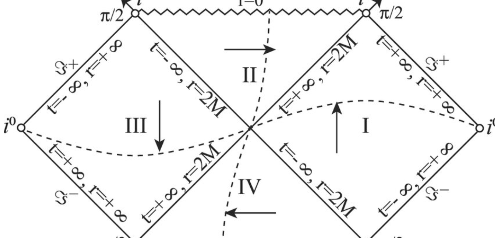
PHY483: Relativity Theory
Einstein's relatvity theory, spacetime intervals, tensor calculus, differential geometry, covariant derivatives, derivations from the action principle. Kerr, Schwarzschild, Reissner-Nordstrom, and Kruskal spacetimes and black hole solutions from Einstein's equations.
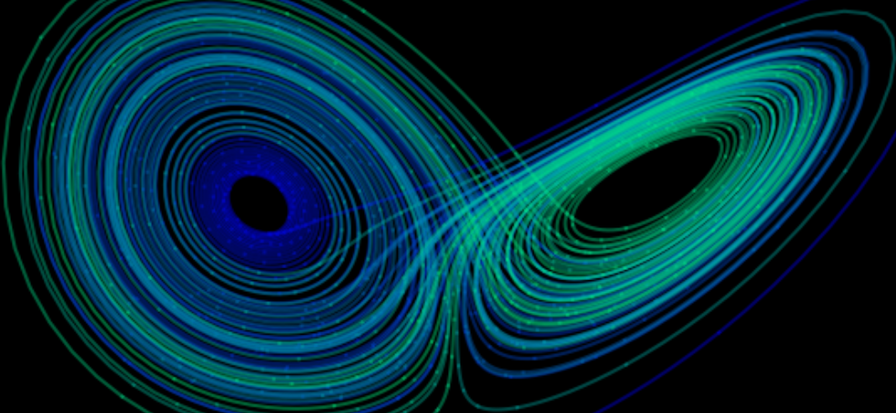
PHY460: Nonlinear Dynamics and Chaos
Nonlinear physics, stability, chaos, dynamical systems, bifurcations, fractals, phase plots, cobweb plots, strange attractors.

PHY456: Quantum Mechanics II
Heisenberg and Schrodinger pictures, scattering theory, partial wave expansion, WKB approximation, TD/TI perturbation theory with degeneracy, addition of angular momentum (spin, orbital).
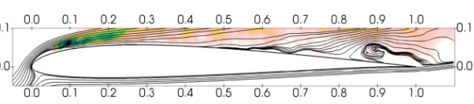
PHY454: Continuum Mechanics
Theory of continuous matter. Navier-Stokes solutions, viscosity, boundary layers, tensor calculus (3 dimensions). Stress, strain, mass flux, vorticity, shear, waves, instabilities. Convection and turbulence, atmospheric dynamics.
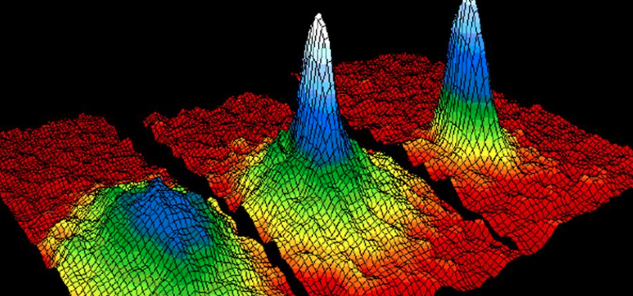
PHY452: Statistical Mechanics
Classical and quantum statistical mechanics of non-interacting systems. Canonical ensembles, partition functions, thermodynamic equilibrium, stability and perturbations, phase space, ideal Bose/Fermi systems, Bose-Einstein condensation, Fermi-Dirac statistics.
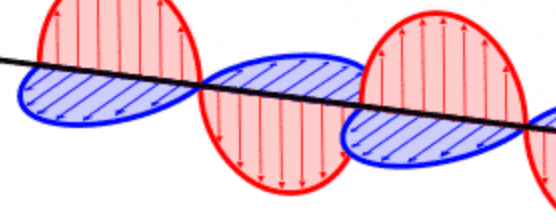
PHY450: Relativistic Electrodynamics
Classical field theory. Special relativity, four-vector and tensors. Derivations from the principle of stationary action. Maxwell's equations in Lorentz covariant form, Lorentz transformations, Noether's theorem for fields, energy-momentum tensor, electromagnetic fields in relativistic frames, Lienard-Wiechart potentials, multipole expansion, radiation (moving charges).
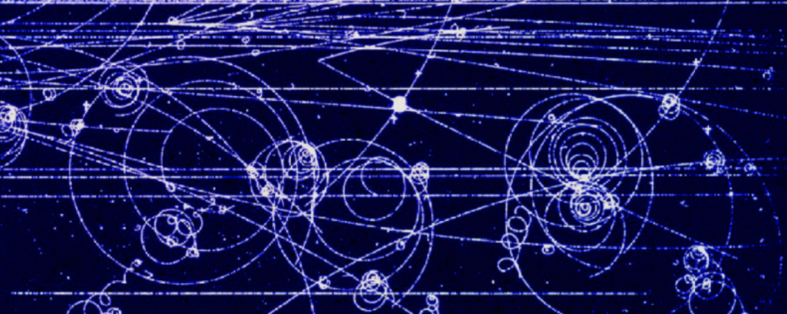
PHY424: Advanced Physics Laboratory
Various supervised experiments and research projects.
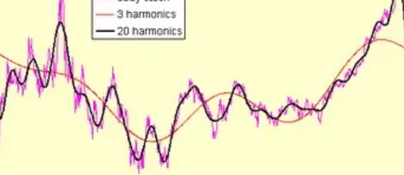
PHY408: Time Series Analysis
Time series forecasting, numerical simulations, convolutions, window functions, discrete transformations, digital filter design, FFT algorithms, truncation effects, aliasing. Auto and cross-correlation, stochastic processes, power spetra, chirp rate analyses. Advanced Python scripting and mathematical modeling. Experimental research and design.
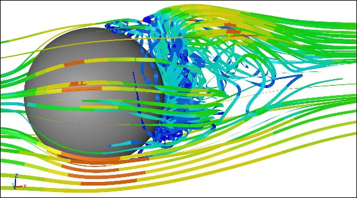
PHY407: Computational Physics
Functional analysis (derivatives and integrals), locating roots and optimization problems (extrema). Resolution of linear and non-linear equations, eigenvalue problems, Fourier analysis, ODEs/PDEs, Monte Carlo methods. Advanced plotting and animation (Matplotlib). Trapezoidal rule, Gaussian elimination, pivoting, LU decomposition, matrix algebra, tridiagonal and banded matrices, relaxation methods, binary searches, Newton's method, secant method, Gauss-Newton method, gradient descent, Fourier series, DFT/FFTs along multiple axes, Euler's method for PDEs, Runge-Kutta method up to fourth-order, boundary value problems, infinite range solutions, leapfrog methods, time reversal, Bulirsch-Stoer methods, Gauss-Seidel method, FTCS metthod, numerical stability, Crank-Nicolson methods, spectral methods, Markov chains, Monte Carlo integration.
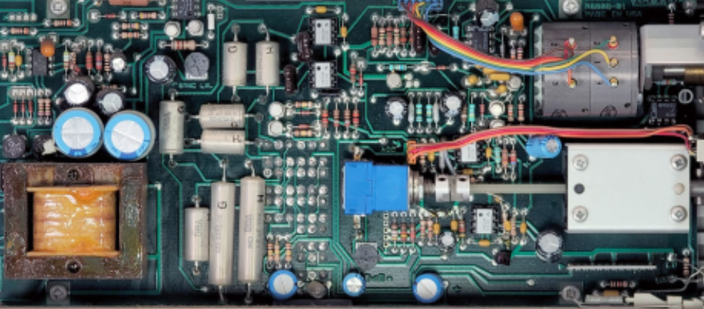
PHY405: Electronics Laboratory
Engineering of electronic circuits. Analog and digital systems, programming in C++, circuit simulation, impedance computation, transfer functions (filters), microcontrollers.
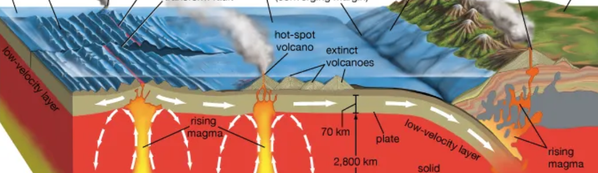
JPE395: Geophysics
Geophysical methods for the Earth's interior. Seismic waves, rheology, tectonics, gravity, isostasy,heat convection, and magnetic field analysis.
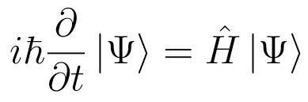
PHY356: Quantum Mechanics I
Schrödinger equation, wave mechanics, eigenfunctions, operators, uncertainty principle, commutators, spins states and orbital angular momentum, Dirac notation, Fourier transforms, particle in a box, tunneling, bound states. Quantum harmonic oscillator in n-dimensions.
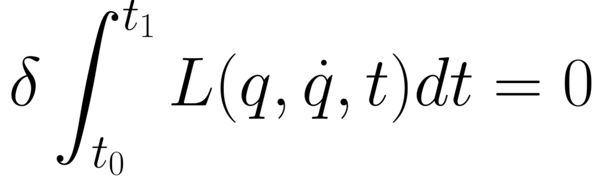
PHY354: Hamiltonian Mechanics
Hamilton's principle, Lagrangian mechanics, stability/instabillilty, central potentials, Euler-Lagrange equations, Maupertuis' principle, canonical transformations, Hamilton-Jacobi theory from the Action principle. Variational calculus. Particle and rigid-body dynamics, inertia tensor, Poisson brackets, Noether's theorem, gyroscopes.
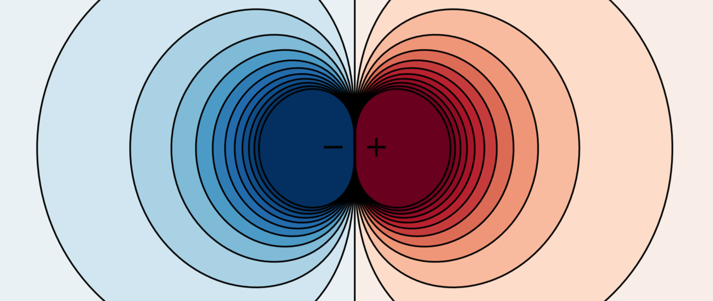
PHY350: Electrodynamics II
Poisson and Laplace equations, method of images, multipole expansion, atomic dipoles, polarizability, dieletrics, Maxwell's equations in matter, static and dynamical electric and magnetic fields, Lorentz force law.
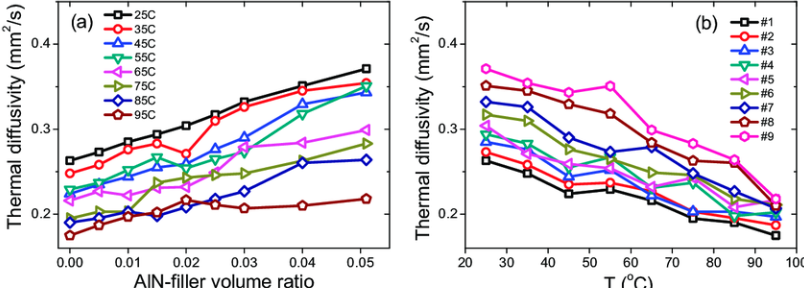
PHY324: Physics Laboratory
Various supervised experiments and research projects.
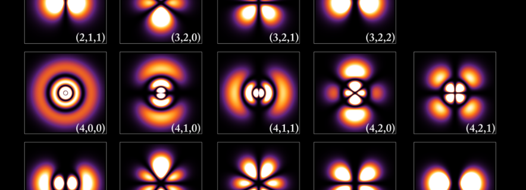
PHY256: Introduction to Quantum Mechanics
Introduction to non-relativistic quantum mechanics, failures of classical physics, Stern-Gerlach effect, superposition, Heisenberg uncertainty principle, wavelet interference, spin states, wave functions, infinite-well particle dynamics in one dimension, measurements, wavefunction collapse.
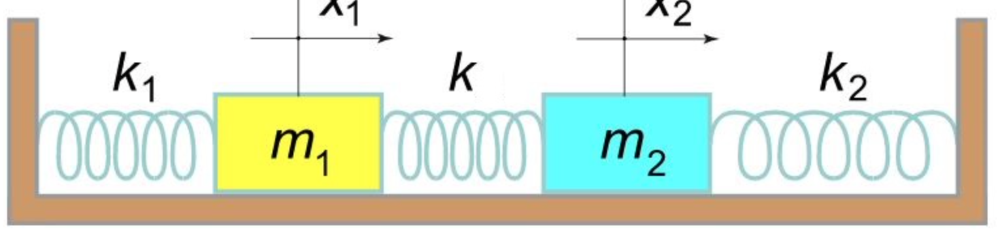
PHY254: Newtonian Mechanics
Newton's laws of motion, linear and nonlinear coupled differential equations, conservation of energy and momentum, central fields, oscillations, phase space, double pendulums, rotating bodies..
PHY252: Thermal Physics
Maxwell's relations, entropy, heat capacities, partition functions, thermodynamic cycles, canonical distributions, engines and refrigerators.
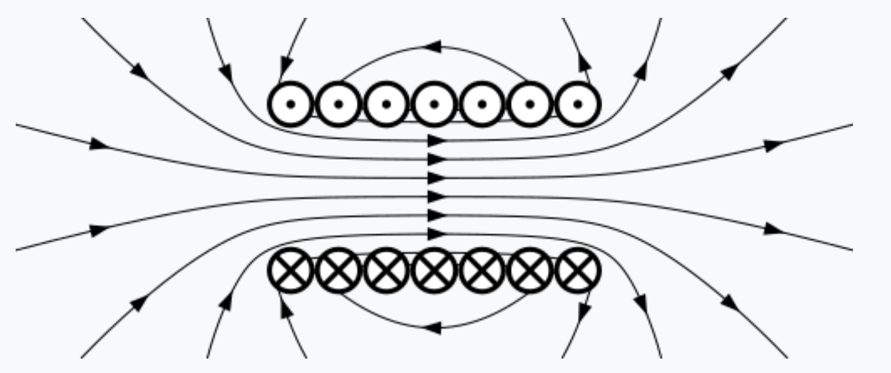
PHY250: Introduction to Electrodynamics
Electro and magneto statics, introduction to vector calculus, point charges, Gauss's law, conductors, Ampere's law, Biot-Savart law, Faraday's law, Maxwell's equations in free space.
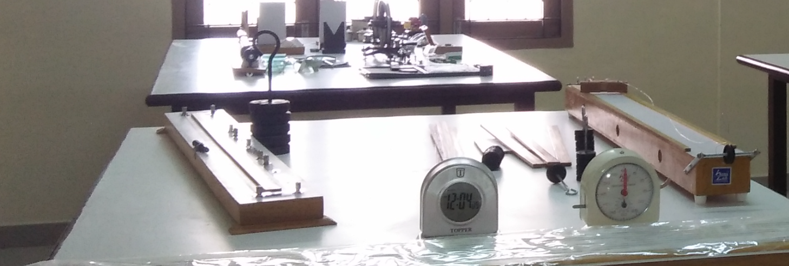
PHY224: Introduction to Physics Laboratory
Various supervised experiments and research projects.
PHY151/PHY152: Foundations of Physics I/II
Introduction to physics. Classical mechanics, thermodynamics, waves. Taylor series and integration by parts. Energy-momentum conservation laws, kinematics, dynamics, Newtonian gravity and electricity.
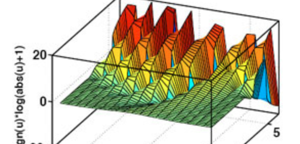
AMP346: Partial Differential Equations
Partial differential equations up to 2nd order, seperation of variables, Sturm-Liouville theorems, Bessel functions, Green's functions, Legendre polynomials, Fourier analysis, Laplace transformations, Z-transformations, series solutions, stationary phase method.
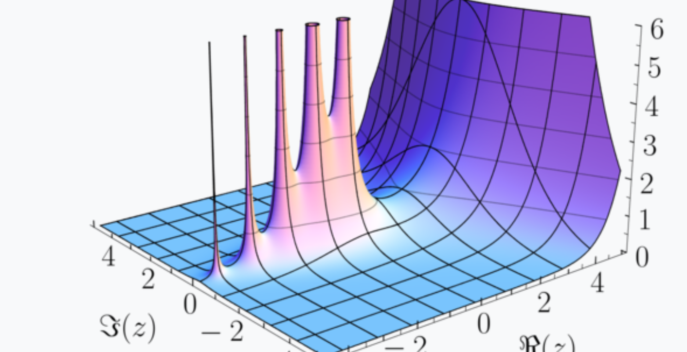
MAT334: Complex Analysis
Complex numbers, analytic and meromorphic functions, Cauchy's theorem,complex integration, series expansions, residues and poles, analytic continuation, harmonic functions, conformal mappings.
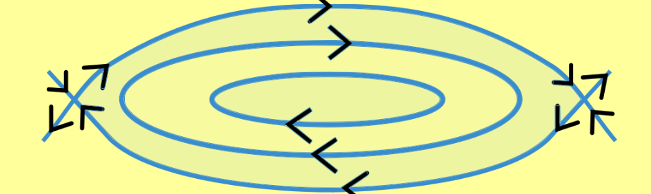
MAT244: Ordinary Differential Equations
First and second-order ODE systems, series solutions, matrix representations, integration factors, seperable equations, homogeneous equations, reduction of order, Wronskian, integral solutions, existence and uniqueness theorems, variation of parameters.
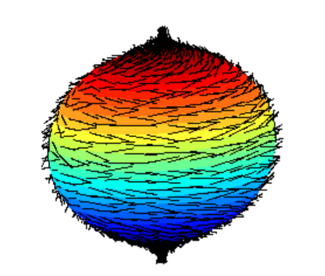
MAT237: Multivariable Analysis
Introductory topology, n-dimensional limits (epsilon-delta), Taylor's theorem in n-dimensions, Jacobian and Hessian matrices, Fourier series, 3-dimensional integrations, Jordan measure, Fubini's theorem, exhaustions, implicit and inverse function theorems, optimizations, Lagrange multipliers, change of variables, vector calculus, Green's theorem, divergence theorem, Stokes' theorem.
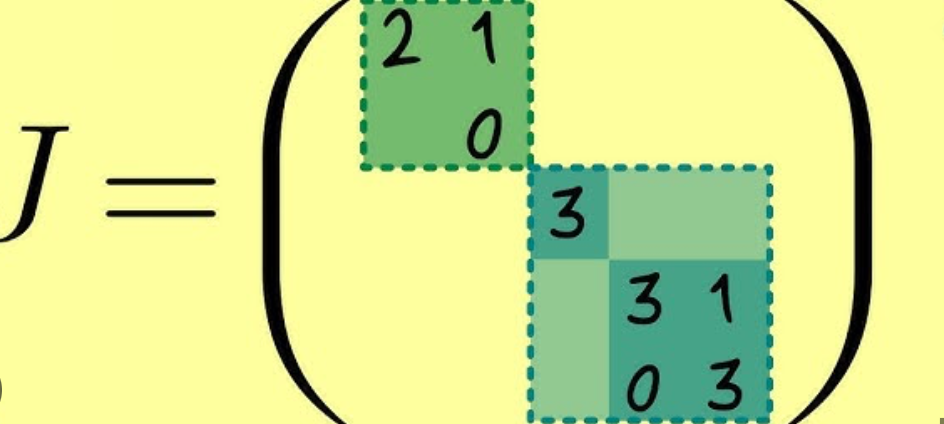
MAT224: Linear Algebra II
Fields, vector spaces, complex numbers, kernels and images, diagonalization, dimension theorem, spectral theorem, adjoint/self-adjoint operators, nilpotent mappings, isomorphisms, Jordan canonical form.
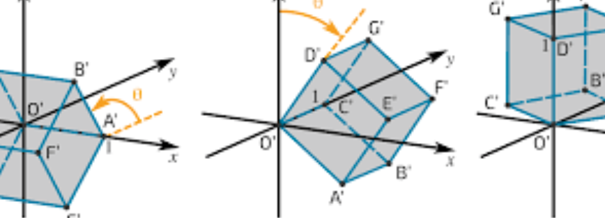
MAT224: Linear Algebra I
Systems of linear equations, Gaussian elimination, projections, change of basis, matrices, determinants, vector spaces, linear transformations.
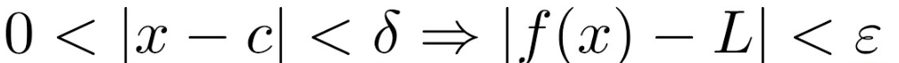
MAT137: Real Analysis
Introduction to rigorous mathematical reasoning, epsilon-delta definitions, inverse function theorem, mean value theorem, limits, continuity, differentiability, integration.
Major courses shown first; every coursework file is reachable from the archive card.